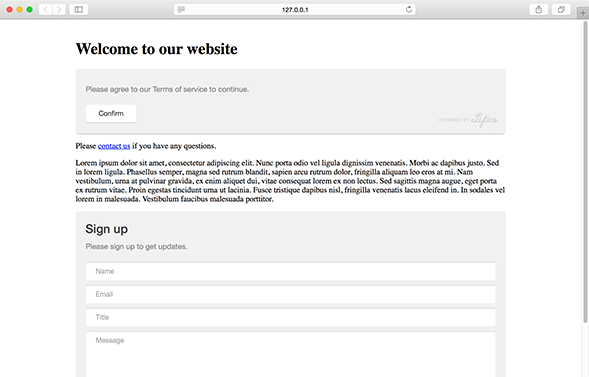
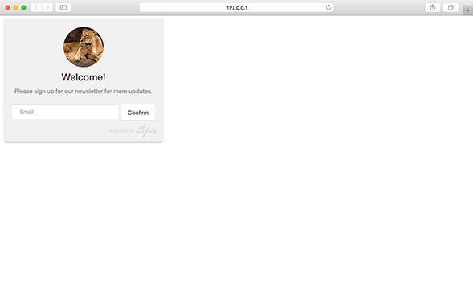

An inline module can be inserted into an existing <div> element on your page. This allows you to render personalized messages and forms anywhere on your page.
Note: inline modules do not support the close or cancel option. Clicking the confirm button will trigger success state for form or subscription modules, but we recommend setting a custom callback for the confirm button of a inline message module.
position
Position determines the HTML element that should contain the inline module.
position string |
|
| Value | Behavior |
|---|---|
| selector | Javascript selector of an existing div on the page where the module should appear. |
Positions - Live Preview

variant
Variant determines any extra content that may be used by the module.
variant int |
|
| Value | Behavior |
|---|---|
| 1 | default text-only-module |
| 2 | module includes an image |
| 3 | module includes a content recommendation |
image
Define the featured image you would like to use for the module.
Note: This setting is only valid for modules with a variant value of 2.
| Key | Type | Behavior |
|---|---|---|
| image | string | URL of the image to feature |
Image (variant 2) - Live Preview
